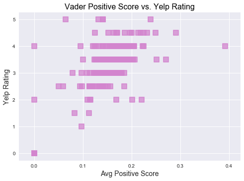

When we were not able to find strong relation between Vader Negative score and Yelp ratings, next step was to check relation between Vader Positive score and Yelp ratings.
As seen in the graph, restaurants seem to have very low Vader positive score and yet higher Yelp ratings. There were few outliers having 0 vader score and 0 ratings, but not many. We were looking for instances where restaurants had lower Vader positive score and lower Yelp ratings. But we did not find many restaurants falling in such category. This made us conclude that Negative/Positive Vader sentiment score does not affect the Yelp ratings.
Conclusion:
Yelp reviews do not cause restaurants to close!